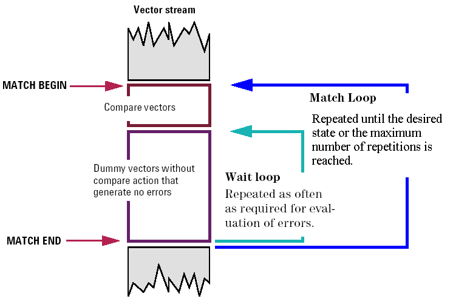
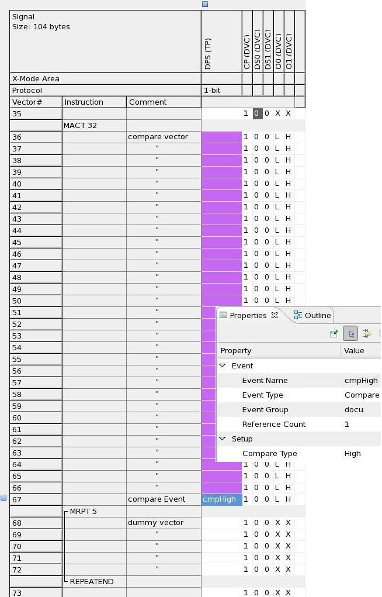

Inserting counted match loops
About this task
Match loops are used to put a DUT without a reset pin into a state required for some test. The general principle is to specify a sequence of vectors that are executed in a loop and, if repeated often enough, put the DUT successively into each of its possible states. After each repetition, it is checked if the desired state has been reached. If so, the loop is terminated. If not, it is repeated.
A certain time is required for evaluating the compare result and to propagate it to the error flag that controls the repetition of the loop. To provide this time span, a number of dummy vectors without compare actions must be generated after the functional vectors before the end of the match loop.
The following figure shows the operation mode of the counted match loop:

There are two loops, the main loop and the wait loop. The body of the main loop executes the compare vectors once, and then the wait loop.
A counted match loop is started with the MACT instruction. This instruction specifies the maximum number of unsuccessful repetitions for the main loop. The CONTINUE option specifies to carry on with the test even if all repetitions of the match loop failed. Then the compare vectors must be specified with a GENV or RPTV instruction (an exception is when using Nested match loops, in which case you may insert the MACT or MRPT instruction here). These must be followed by the MRPT instruction, which defines the number of dummy vectors to be repeated in the wait loop. You can specify more than one dummy vector if the total number of cycles within the match loop must be a multiple of a number greater than 1.
Before you begin
The Instruction column must be displayed and the pattern must be displayed in collapsed mode.
Procedure
Results
The Pattern Editor displays the counted match loop as shown in the example below.
Example
Note that the compare event shown below in row 67, is supported by DPS128 only. In this example the Compare Type is set to High.

Functional changes
- SmarTest 6.5.2: Counted match loops superseded timed match loops.
- SmarTest 7.1.4: Additional option for counted match loops: CONTINUE
- SmarTest 7.2.1: Additional function for counted match loops: Compare event (DPS128 only)